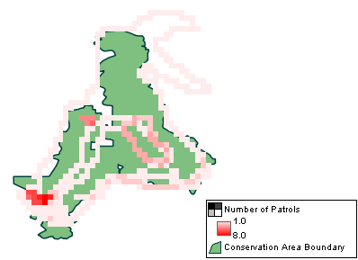

Os resultados são exibidos em um formato de grade (gráfico raster) especificado pelo usuário com resultados agregados com base no tamanho de grade definido. Os resultados podem ser visualizados em uma tabela ou em um mapa.
 |
Mapa de Consulta em Grade de Exemplo |
Os valores calculados podem ser relacionados à patrulha (distância total, número total), valores relacionados ao modelo de dados (número total de observações, idade média etc) ou taxas de encontros (qualquer um dos acima por distância, número de dias etc.)